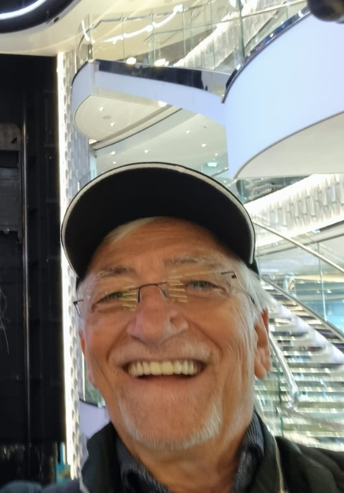
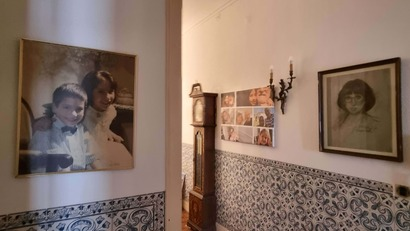

Born in Lisbon, Arroios, on Sunday, August 2, 1953, at 6:00 a.m. — a journey through medicine, stock exchange revolutions, IBM mainframes, and the frontier of generative AI.
In 2026 I proceed my formation in physics, biology, and computer science, dedicating about fourteen hours per day. This is not a return to school but a deepening of the work I began with AI workflow management and content engineering.
I am developing a personal theoretical framework that questions where mainstream physics assumes rather than proves. For that framework I have designed a set of stress tests, detailed in a Zenodo paper. I have designed six stress tests: derivation, asymmetry, quantization, binding, effectiveness. The paper is lean; the tests are cruel. Any framework that bends to them survives.
Alongside the framework, I am building an epistemic‑first arXiv ingestion pipeline with mainstream accepted physics domain taxonomy. The pipeline ingests preprints nightly, classifying them by how they ground claims: empirical, mathematical, analogical, or mystical. It outputs a map of what physics actually trusts — and where it hides its ambiguities.
I am writing a book about mainstream assumptions, perceptual limits, and wave function collapse. The book has no equations. It walks through each assumption — objectivity, locality, separability — and then maps the limits of human perception. The final third treats collapse not as a problem to solve but as a residue of description.
I am also developing a custom LLM from first principles, one that aims to be useful. Useful means it reads my arXiv pipeline output, highlights structural gaps in my framework, and helps rewrite the book’s arguments against their own weaknesses. It is built token by token, not fine‑tuned from anyone else's weights.
I maintain an active written presence across Substack, Medium, and other social media and European Countries sites.

📌 Current focus (2025–2026)
Content Engineering strategic design · AI governance · real-time adaptive workflows
🔹 From mainframe logic to cognitive automation — building systems that think ahead.
Substack.html (you can replace with your custom URL later). All other channels are active with your real profiles.